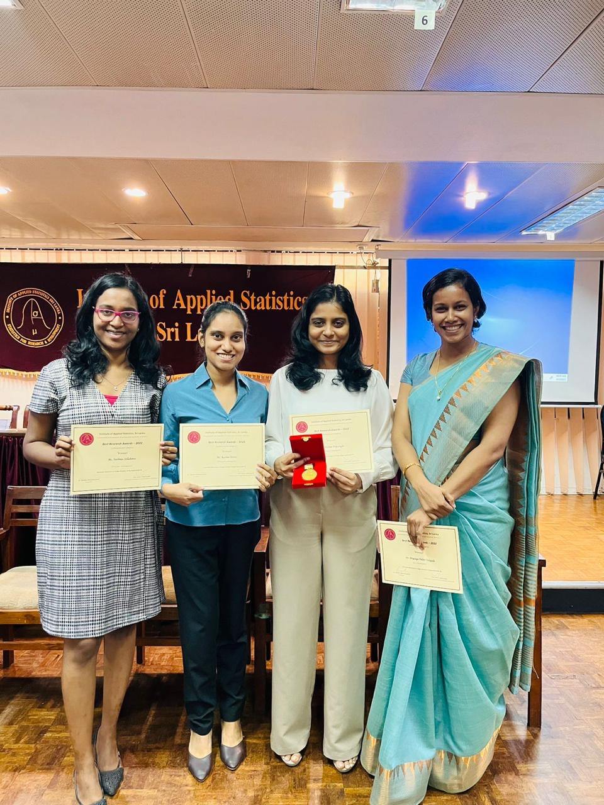
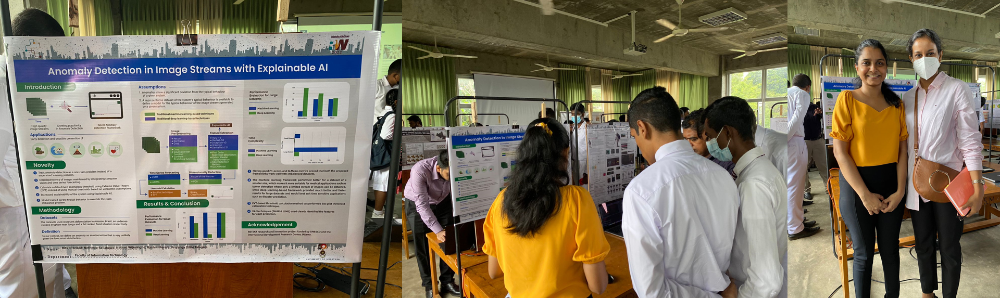
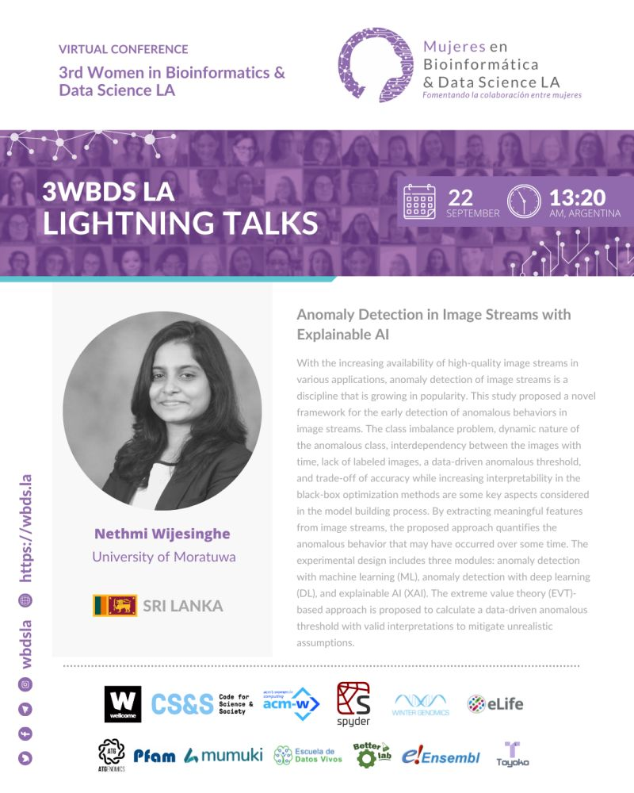

Anomaly Detection in Image Streams With Explainable AI
Project Overview
This study proposes a novel and explainable framework for the early detection of anomalies in image streams, aimed at addressing critical challenges in fields such as environmental monitoring, disaster response, and public safety. Unlike traditional supervised learning methods that rely heavily on large, labeled datasets and struggle to detect previously unseen anomalies, the proposed approach adopts a semi-supervised learning paradigm. It models only the typical behavior and detects anomalies as deviations from this learned norm using a combination of computer vision techniques, univariate time series forecasting, and a data-driven thresholding method grounded in Extreme Value Theory. To improve model transparency and interpretability, explainable AI techniques are integrated into the deep learning module, offering insights into the contribution of extracted features to anomaly detection decisions.
The framework’s effectiveness and generalizability were tested across multiple real-world scenarios. These included monitoring progressive deforestation through satellite imagery, detecting changes following an undersea volcanic eruption, and analyzing flood impact caused by torrential rainfall. The results demonstrate that the proposed framework can successfully identify anomalies in diverse contexts, even with limited labeled data. Furthermore, the study highlights that while deep learning models perform well with larger datasets, conventional machine learning approaches are more effective with smaller datasets. By combining anomaly detection with interpretability, the framework not only improves detection accuracy but also builds user trust and supports informed decision-making across different application domains.
Project Team
Dr. Priyanga Dilini Talagala, Department of Computational Mathematics, University of Moratuwa (Principle investigator of the project. Conceptualizing the overall project, acquiring funding, and project coordination and supervision)
Ms. Nethmi Wijesinghe, Faculty of Information Technology, University of Moratuwa
Ms. Nethmee Sellahewa, Faculty of Information Technology, University of Moratuwa
Ms. Rashmi Perera, Faculty of Information Technology, University of Moratuwa

Outputs
Publicaitons
1.Wijesinghe, N., Perera, R., Sellahewa, N., & Talagala, P. D. (2023, December). Early Identification of Deforestation using Anomaly Detection. In 2023 8th International Conference on Information Technology Research (ICITR) (pp. 1-6). IEEE. DOI:10.1109/ICITR61062.2023.10382919
Magazine Articles
- Wijesinghe, N., Perera, R., Sellahewa, N., & Talagala, P. (2023). Anomaly detection in image streams with explainable AI. University of Moratuwa, Bolgoda Plains Research Magazine. DOI: https://doi.org/10.31705/BPRM.v3(2).2023.5
Awards
This project conducted under my supervision achieved an impressive array of accomplishments both nationally and internationally:
Best Research Award 2022: Winner of the undergraduate category at the competition organized by the Institute of Applied Statistics Sri Lanka (IASSL) for the extended abstract titled “Anomaly Detection in Image Streams Using Explainable AI.”
Gold Award: Recipient of the Gold Award in the Thesis in 5 Minutes Competition (T5M Series 2/2022) in the category “Degree C1: Science, Technology, Engineering, and Mathematics” for the thesis titled “Anomaly Detection in Image Streams with Explainable AI.”
First Place: Winner of the Thesis Competition at the OCTAVE Advanced Analysis Symposium, organized by the Data and Advanced Analytics Division of the John Keells Group.
The thesis was selected for a poster presentation at the University of Moratuwa Research Week in November 2022.

- Nethmi Wijesinghe presented “Anomaly Detection in Image Streams with Explainable AI” at the 3rd Women in Bioinformatics & Data Science LA Conference on 22nd September. Full program
